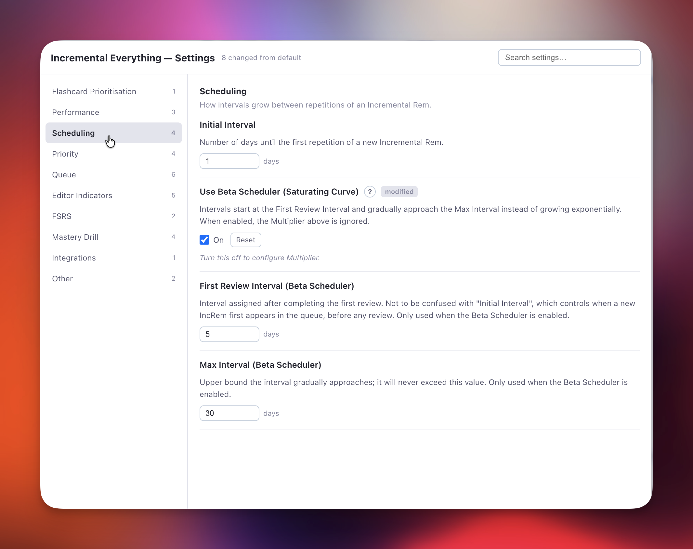
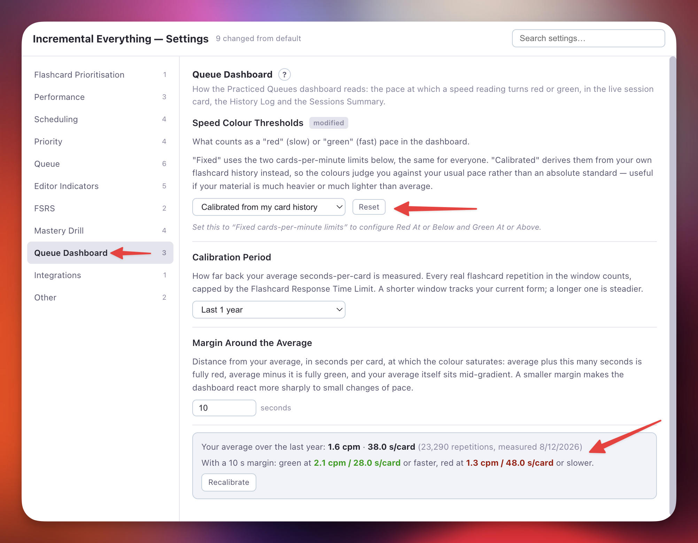

Plugin Settings Reference¶
This page documents every configurable setting in the Incremental RemNote plugin.
Every setting lives in one place: the plugin's own settings popup.
Where the settings are¶
Open the popup with the command Incremental RemNote: Settings (quick code is). It groups the settings by area, hides the ones that do not apply — the Beta Scheduler's parameters stay out of sight until you switch that scheduler on — and links each entry to the section of this manual that explains it.

Above: the Scheduling group with the Beta Scheduler on, so its two parameters are shown and the Multiplier is hidden. The ? opens this manual at the matching section; Reset appears on anything changed from its default, next to a modified badge.
RemNote's own plugin settings panel is empty for this plugin. Up to v1.0.44, five of them stayed behind there — Enable Flashcard Prioritisation, Performance Mode, the two Always Use Light Mode switches and Enable Hide-in-Queue Powerups and Commands — on the theory that RemNote's panel is where you would look first if the plugin ever felt heavy. It never was: there was no performance problem to chase, and the split only gave you a second place to look. Since v1.0.45 they are in the popup with everything else, and editable there.
Upgrading from an earlier version
Your existing settings are carried over automatically the first time you load a version that moves them — nothing to re-enter, and nothing you have changed in the popup is overwritten. A setting appears in Settings → Plugins → Incremental RemNote for the single session in which it is being read across, carrying a note that says so, and is gone after the next reload. Editing it there in the meantime has no effect.
Flashcard Prioritisation¶
In the IE Settings popup.
| Setting | Type | Default | Description |
|---|---|---|---|
| Enable Flashcard Prioritisation | Boolean | false |
Master switch for per-flashcard priorities. Off by default. See Priorities for Flashcards for what it turns on, what keeps working without it, and why it is opt-in. Requires a reload. |
Performance¶
In the IE Settings popup.
| Setting | Type | Default | Description |
|---|---|---|---|
| Performance Mode | Dropdown | Light |
Choose between Full (all features, high resource use — best on Desktop App) and Light (faster, no relative priority/shield). The background pretagging and caching pass this used to start now also requires Enable Flashcard Prioritisation; with that off, Full mode no longer tags anything across your knowledge base. |
| Always Use Light Mode on Mobile | Boolean | true |
Auto-switches to Light mode on iOS/Android to prevent crashes and improve performance. |
| Always Use Light Mode on Web Browser | Boolean | true |
Auto-switches to Light mode on web browsers where Full mode can be slow or unstable. |
Scheduling¶
In the IE Settings popup.
| Setting | Type | Default | Description |
|---|---|---|---|
| Initial Interval | Number | 1 |
Number of days until the first repetition of a new Incremental Rem. |
| Multiplier | Number | 1.5 |
Base of the exponential spacing formula: after your Nth review, the next interval is ⌈Multiplier ^ N⌉ days. The interval depends only on how many reviews you have done, not on the previous interval. With the default 1.5: 1st review → 2 days, 2nd → 3, 3rd → 4, 5th → 8, 6th → 12. Hidden while the Beta Scheduler is on, which ignores it. See IncRem Scheduler. |
| Use Beta Scheduler (Saturating Curve) | Boolean | false |
Enable the beta saturating scheduler. Intervals start at the First Review Interval and gradually approach the Max Interval, instead of growing exponentially. See IncRem Scheduler for full details. |
| First Review Interval (Beta Scheduler) | Number | 5 |
Interval in days assigned after completing the first review. Different from Initial Interval above, which controls when a new IncRem first appears in the queue. Shown only while the Beta Scheduler is on. |
| Max Interval (Beta Scheduler) | Number | 30 |
Upper bound in days the interval gradually approaches. The interval will never exceed this value. Shown only while the Beta Scheduler is on. |
Priority¶
In the IE Settings popup.
| Setting | Type | Default | Range | Description |
|---|---|---|---|---|
| Default IncRem Priority | Number | 50 |
0–100 | Priority assigned to new Incremental Rems. Lower = more important. |
| Default Card Priority | Number | 50 |
0–100 | Priority assigned to flashcards without inherited priority. Lower = more important. |
| Priority Step Size | Number | 5 |
1–50 | What "one step" of priority means throughout the plugin. It is the amount the priority number changes with the Quick Increase/Decrease Priority shortcuts (Ctrl+Opt+Up/Down), and the amount each new cloze's number is raised above the previous one by Auto-Priority Graduation. |
| Priority Widget in Editor | Dropdown | Show for IncRem and Cards |
— | Controls when the priority widget appears in the right-hand margin of the editor. Options: Show for IncRem and Cards, Show only for IncRem, or Disable. |
Queue¶
In the IE Settings popup.
| Setting | Type | Default | Description |
|---|---|---|---|
| Collapse Queue Top Bar (IncRem only) | Boolean | false |
Frees vertical space during Incremental Rem review by collapsing the queue top bar to a thin strip; hover it to reveal the full bar. Regular flashcard turns are unaffected. |
| Display Priority Shield in Queue | Boolean | true |
Shows a real-time count of your highest-priority due items in the queue. Appears below the Answer Buttons for IncRems and in the card priority widget for flashcards. 📖 Priority Shield. |
| Display Weighted Priority Shield in Queue | Boolean | true |
Shows what fraction of your total priority-weighted workload has been processed. High-priority items carry exponentially more weight (~10× at the top vs bottom), so processing them gives a bigger boost. Always increases as you review items. 📖 Weighted Shield. |
| Display Priority in Queue Toolbar | Boolean | true |
Shows the priority badge of the current flashcard or IncRem at the top right of the queue. |
| Use Isolated Card View in Queue for | Dropdown | Highlights (PDF/HTML) |
Chooses which incremental items use the Isolated Card Viewer as their default view in the queue. Options: Highlights (PDF/HTML), Regular Rems, Both, None. Highlights that do not use the isolated card view are shown inside the PDF/HTML reader; regular Rems that do not use it are shown in the full document context. The toggle button in the queue is always available regardless of this setting — it determines only the initial view for each item. |
| Auto-focus Queue Dashboard | Boolean | false |
Opens the Practiced Queues dashboard in the Right Sidebar automatically every time you enter a queue, and restores it after you press Next or Dismiss on an Incremental Rem (returning you to the live session metrics once the sidebar was used for editing a Rem, or after RemNote auto-focused its own Summary pane for a PDF/HTML). Useful if you always want the live session metrics visible without opening the sidebar manually. Does not apply to mobile, where it would be annoying and counterproductive. 📖 Practiced Queues History & Live Dashboard. |
Editor Indicators¶
In the IE Settings popup. All of these require a RemNote reload after changing.
| Setting | Type | Default | Description |
|---|---|---|---|
| Green Left Border for IncRems | Boolean | true |
Adds a green left border to IncRems in the editor, making your "extracts" easy to spot. |
| Yellow Left Border for Dismissed Rems | Boolean | true |
Rems dismissed from Incremental learning (via the Dismiss button/command) display a yellow left border to indicate they have been already processed (and preserved history). |
| Hide CardPriority Tag in Editor | Boolean | true |
Hides the CardPriority powerup tag in the editor to reduce visual clutter. Priority can still be set with Alt+P. |
| Hide Dismissed Tag in Editor | Boolean | true |
Hides the Dismissed powerup tag in the editor to reduce clutter. |
| Show Priority Badges in Table Cells | Boolean | true |
Draws a coloured band badge (e.g. 50s) at the top-right of each table row's first cell — the one place the Priority Editor widget cannot render. Run Refresh Priority Badges (Tables) once to fill in existing Rems. Governs tables only — PDF highlight badges are not affected by it. 📖 Priorities in Tables. |
FSRS¶
In the IE Settings popup.
Display and statistics only — these do not schedule anything
Nothing in this group can move a due date. Your scheduling is RemNote's, and is configured in RemNote Settings → Schedulers. These settings tell the plugin what your scheduler is doing, so that the numbers it shows you describe your real reviews — set them to match what you use there. Changing them here alone does not change your scheduling; it only makes the readouts wrong.
| Setting | Type | Default | Description |
|---|---|---|---|
| Display FSRS DSR Stats (Flashcards) | Boolean | true |
Shows calculated FSRS Difficulty (D), Stability (S), and Retrievability (R) for flashcards in the Card Info Bar widget. Requires FSRS v6 scheduler. 📖 Card Stats & FSRS Integration. |
| FSRS Global Weights | String | (empty) | Comma-separated list of 21 FSRS v6 weights (w0–w20). Paste them from RemNote Settings → Schedulers so the plugin computes the same D/S/R your scheduler does. If left blank, the official FSRS v6.1.1 defaults are used. Editing them here does not retrain or change your scheduler. See FSRS Configuration for details. |
| Requested Retention | Number | 90 % |
The recall probability your RemNote scheduler aims for at review time — copy the value from RemNote Settings → Schedulers; setting it here does not change what your scheduler asks for. Stability equals the scheduled interval only at the 90% default; off it, the plugin converts stability to the interval you will actually get and computes the U-Factor from that, showing the 90% figure alongside in parentheses. D, S and R are unaffected. 📖 Requested Retention. |
Mastery Drill¶
In the IE Settings popup. The three parameters appear only while the drill is enabled.
| Setting | Type | Default | Description |
|---|---|---|---|
| Enable Mastery Drill | Boolean | false |
Master switch for the Mastery Drill. Off by default: while it is on, the plugin watches every flashcard rating and keeps a list of the ones to drill, and registers the drill popup, its command and the sidebar notification. Leave it off if you do not use the workflow and none of that work happens. Flashcard and Practiced Queue history are unaffected either way. Requires a reload. (Replaces the former "Skip Mastery Drill", whose value is inverted and carried over automatically.) |
| Old Items Threshold | Number | 7 days |
Number of days after which a card lingering in the Mastery Drill queue is flagged as stale. A warning appears in the widget and you can clear these items with a single click. |
| Mastery Drill Minimum Delay | Number | 120 min |
Cooldown after a card is rated Again or Hard before it appears in the drill, so the initial repetition has time to consolidate. 📖 Minimum Delay. |
| Disable Mastery Drill Notifications | Boolean | false |
Hides the periodic Left Sidebar notification widget that appears when ≥ 10 cards are pending in the Mastery Drill queue. |
Queue Dashboard¶
In the IE Settings popup. Which parameters appear depends on the threshold mode.
These govern the red → green colouring of every speed reading in the Practiced Queues dashboard — the live session card, the History Log and the Sessions Summary table. 📖 Speed Colour Coding.
| Setting | Type | Default | Description |
|---|---|---|---|
| Speed Colour Thresholds | Dropdown | Calibrated from my card history |
Calibrated derives the two ends of the gradient from your own average seconds-per-card, so the colours judge a session against your usual pace rather than a universal standard. Fixed cards-per-minute limits uses the two absolute limits below instead — the same for everyone, and what the dashboard used before this setting existed. |
| Red At or Below | Number | 1.5 cpm |
Fixed mode. A pace at or below this is drawn fully red. 1.5 cpm is 40 s/card. Also the fallback used in calibrated mode until the first measurement completes. |
| Green At or Above | Number | 4 cpm |
Fixed mode. A pace at or above this is drawn fully green. 4 cpm is 15 s/card. Must be higher than the red limit; if it is not, the plugin falls back to the 1.5 / 4 defaults rather than drawing a broken gradient. |
| Calibration Period | Dropdown | Last 1 year |
Calibrated mode. How far back your average is measured: Ever, Last 1 year, Last 1 month or Last 1 week. Shorter windows track your current form; longer ones are steadier. |
| Margin Around the Average | Number | 10 s |
Calibrated mode. Distance from your average, in seconds per card, at which the colour saturates: average + this is fully red, average − this is fully green, and your average itself sits mid-gradient. A smaller margin reacts more sharply to small changes of pace. |
In calibrated mode the section also shows the measured average itself — in both cpm and s/card, with the number of repetitions behind it and the resulting green and red points — and a Recalibrate button that re-measures on the spot.

Integrations¶
In the IE Settings popup.
| Setting | Type | Default | Description |
|---|---|---|---|
| Enable Hide-in-Queue Powerups and Commands | Boolean | false |
Registers five additional Queue Display powerups and their commands — Hide in Queue, Remove from Queue, No Hierarchy, Hide Parent, and Hide Grandparent — that were originally part of the standalone Hide in Queue plugin. These powerup codes are identical to those in that plugin; enabling this setting while the standalone plugin is still installed causes a fatal Duplicated powerup error and prevents Incremental RemNote from loading. Uninstall the standalone Hide in Queue plugin before enabling this. The two powerups added by Incremental RemNote itself — Remove Parent and Remove Grandparent — are always registered regardless of this setting. A RemNote reload is required after changing. 📖 Hide in Queue. |
Other¶
In the IE Settings popup.
| Setting | Type | Default | Description |
|---|---|---|---|
| RemNote Environment | Dropdown | Regular |
Choose which RemNote environment documents open in when using the "Open Editor in New Tab" button. Options: Regular (www.remnote.com) or Beta (beta.remnote.com). |
| Flashcard Response Time Limit | Number | 180 s |
Caps the recorded study time per card. If you step away from your device mid-card, only up to this limit is counted toward speed and total time metrics, mirroring RemNote's native behavior. |